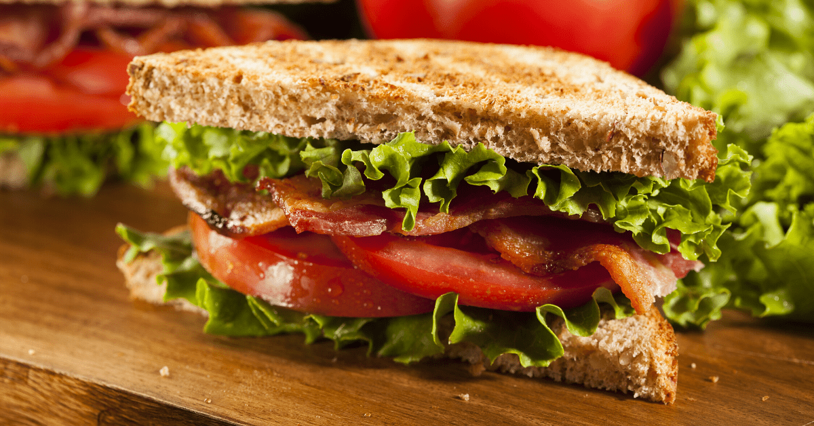

BLT Sandwich

BLT Sandwich
A classic BLT doesn't need much to be good. With such little ingredients it's important to use the best ones available. So reach for the homegrown juicy red tomatoes and the extra thick-cut bacon. Here we really elevate the bacon by brushing it with maple syrup and a little cayenne pepper. We also spice up the mayonnaise some chili powder and a paprika to perk it up.
Ingredients
- 2 tablespoons maple syrup
- 2 tablespoons packed brown sugar
- Pinch cayenne
- 1 lb. thick cut bacon
- 1/4 cup mayonnaise
- 1 teaspoon chili powder
- 1/4 teaspoon sweet paprika
- Kosher salt
- Freshly ground black pepper
- 4 slices white bread, lightly toasted
- 4 leaves green lettuce
- 4 (1/4" thick) slices vine-ripened tomatoes
Steps
- Preheat oven - Preheat the oven to 400 degress. In a small bowl, whisk together maple syrup, brown sugar, and cayenne.
- Prepare bacon - Line a rimmed baking sheet large with foil and set a wire rack on top. Lay bacon in a single layer on rack. Bake, rotating tray halfway through, until bacon is just golden, about 30 minutes.
- Glaze with maple syrup - Remove tray from oven and brush bacon generously with maple mixture. Turn oven to broil and return bacon to oven until glaze is thickened and bacon is crisp, watching carefully as it will cook fast, about 3 more minutes. Transfer to a plate to cool.
- Prepare sauce - Meanwhile, in another small bowl, whisk mayonnaise with chili powder and paprika. Season with salt and pepper.
- Last steps - Spread mayonnaise on 2 slices of bread. Top each slice with lettuce, tomato, and bacon, then close sandwiches with remaining 2 slices bread.